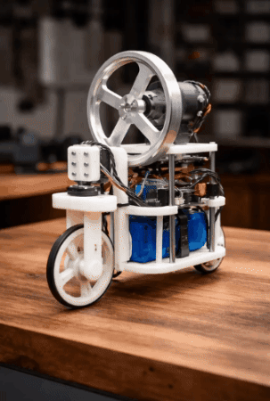

Side Projects
During my childhood till teenage years, I made many stuff; however, I did not document them. That experience is why I make a point to do so now.

For a small wood tensegrity table intended to support a light load such as a phone, you do not need structural cables or heavy hardware. The goal is low stretch, good knot/crimp reliability, and clean aesthetics. I have documented it here!

Self-balancing robots (two-wheeled vehicles, bikes, or reaction-wheel cubes) solve the classic inverted pendulum problem: the robot’s center of mass must be kept above its wheel-base or pivot. I have documented it here!

I was appointed by Engr. Rayvencer Reyes as consultant to the entire Mechanical Engineering batch for the radio-controlled ornithopter project. If you want to know the step by step process, under the hood, what its like to build it. I have documented it here USTP Ornithopter

Led the whole batch of mechanical and electrical engineering(for the subject course) in the design and implementation of a water rocket launcher pad which is a hands-on engineering challenge that combined physics, creativity, and design, where participants built and launched water rockets while learning fundamental aerospace principles. Documented the full process here!

Wooden Air Engine is a complex machines can be built using simple, sustainable materials. This project highlights design efficiency, craftsmanship, and fundamental thermodynamic concepts—without metal or fuel of an engine. Documented the full process here!

We build one of the strongest, best-looking tower using only spaghetti and glue that supports a top load and meets weight and size limits. Documented the full process here!

How Competition-Winning Spaghetti Bridges Actually Carry Heavy Loads and the Structural detail and Design to make one! Documented the full process here!

From scratch guide for turning a portable plastic watering can into a DIY vacuum cleaner using your strong fan! Documented the full process here!
We also built a rocket stove with materials that are only found in our local junk shops :D